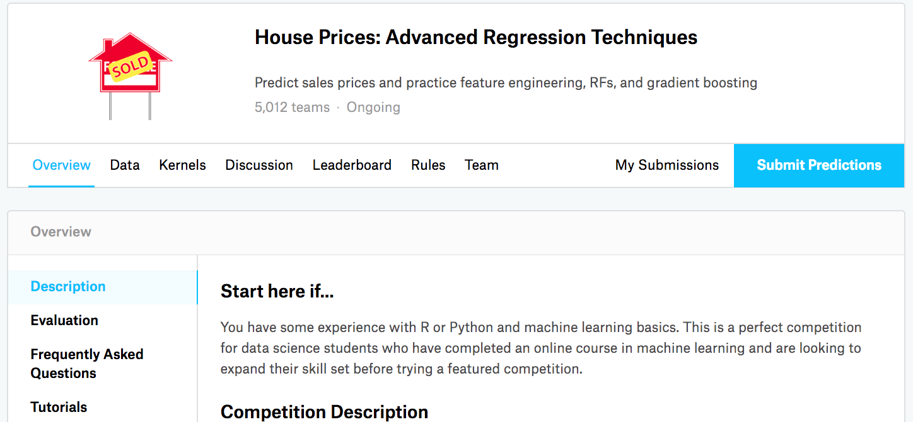

%load_ext d2lbook.tab
tab.interact_select(['mxnet', 'pytorch', 'tensorflow', 'jax'])Prédiction du prix des maisons sur Kaggle
:label:sec_kaggle_house
Maintenant que nous avons introduit quelques outils de base pour
construire et entraîner des réseaux profonds et les régulariser avec des
techniques incluant l’atténuation des poids (weight decay) et le
dropout, nous sommes prêts à mettre toutes ces connaissances en pratique
en participant à une compétition Kaggle. La compétition de prédiction du
prix des maisons est un excellent point de départ. Les données sont
assez génériques et ne présentent pas de structure exotique qui pourrait
nécessiter des modèles spécialisés (comme pourraient le faire l’audio ou
la vidéo). Cet ensemble de données, collecté par
:citet:De-Cock.2011, couvre les prix des maisons à Ames,
Iowa, sur la période 2006–2010. Il est considérablement plus grand que
le célèbre Boston
housing dataset de Harrison et Rubinfeld (1978), possédant à la fois
plus d’exemples et plus de caractéristiques.
Dans cette section, nous vous guiderons à travers les détails du prétraitement des données, de la conception du modèle et de la sélection des hyperparamètres. Nous espérons qu’à travers une approche pratique, vous acquerrez des intuitions qui vous guideront dans votre carrière de data scientist.
%%tab mxnet
%matplotlib inline
from d2l import mxnet as d2l
from mxnet import gluon, autograd, init, np, npx
from mxnet.gluon import nn
import pandas as pd
npx.set_np()%%tab pytorch
%matplotlib inline
from d2l import torch as d2l
import torch
from torch import nn
import pandas as pd%%tab tensorflow
%matplotlib inline
from d2l import tensorflow as d2l
import tensorflow as tf
import pandas as pd%%tab jax
%matplotlib inline
from d2l import jax as d2l
import jax
from jax import numpy as jnp
import numpy as np
import pandas as pdTéléchargement des données
Tout au long du livre, nous entraînerons et testerons des modèles sur divers ensembles de données téléchargés. Ici, nous (implémentons deux fonctions utilitaires) pour télécharger et extraire des fichiers zip ou tar. Encore une fois, nous passons sur les détails d’implémentation de telles fonctions utilitaires.
%%tab all
def download(url, folder, sha1_hash=None):
"""Download a file to folder and return the local filepath."""
def extract(filename, folder):
"""Extract a zip/tar file into folder."""Kaggle
Kaggle est une plateforme
populaire qui héberge des compétitions de machine learning. Chaque
compétition est centrée sur un ensemble de données et beaucoup sont
parrainées par des parties prenantes qui offrent des prix aux solutions
gagnantes. La plateforme aide les utilisateurs à interagir via des
forums et du code partagé, favorisant à la fois la collaboration et la
compétition. Bien que la course au classement échappe souvent à tout
contrôle, les chercheurs se concentrant de manière myope sur les étapes
de prétraitement plutôt que de se poser des questions fondamentales, il
existe également une valeur énorme dans l’objectivité d’une plateforme
qui facilite les comparaisons quantitatives directes entre les approches
concurrentes ainsi que le partage de code afin que chacun puisse
apprendre ce qui a fonctionné et ce qui n’a pas fonctionné. Si vous
souhaitez participer à une compétition Kaggle, vous devrez d’abord créer
un compte (voir :numref:fig_kaggle).
:width:400px :label:fig_kaggle
Sur la page de la compétition de prédiction du prix des maisons,
comme illustré dans :numref:fig_house_pricing, vous pouvez
trouver l’ensemble de données (sous l’onglet “Data”), soumettre des
prédictions et voir votre classement, L’URL est juste ici :
https://www.kaggle.com/c/house-prices-advanced-regression-techniques

:width:400px :label:fig_house_pricing
Accès et lecture de l’ensemble de données
Notez que les données de la compétition sont séparées en ensembles
d’entraînement et de test. Chaque enregistrement inclut la valeur de la
propriété de la maison et des attributs tels que le type de rue, l’année
de construction, le type de toit, l’état du sous-sol, etc. Les
caractéristiques se composent de divers types de données. Par exemple,
l’année de construction est représentée par un entier, le type de toit
par des affectations catégorielles discrètes, et d’autres
caractéristiques par des nombres à virgule flottante. Et c’est là que la
réalité complique les choses : pour certains exemples, certaines données
sont totalement manquantes avec la valeur manquante marquée simplement
comme “na”. Le prix de chaque maison est inclus pour l’ensemble
d’entraînement uniquement (c’est une compétition après tout). Nous
voudrons partitionner l’ensemble d’entraînement pour créer un ensemble
de validation, mais nous ne pourrons évaluer nos modèles sur l’ensemble
de test officiel qu’après avoir téléchargé les prédictions sur Kaggle.
L’onglet “Data” de la compétition dans
:numref:fig_house_pricing contient des liens pour
télécharger les données.
Pour commencer, nous allons [lire et traiter les données en
utilisant pandas], que nous avons introduit dans
:numref:sec_pandas. Par commodité, nous pouvons télécharger
et mettre en cache l’ensemble de données immobilières de Kaggle. Si un
fichier correspondant à cet ensemble de données existe déjà dans le
répertoire de cache et que son SHA-1 correspond à
sha1_hash, notre code utilisera le fichier mis en cache
pour éviter d’encombrer votre Internet avec des téléchargements
redondants.
%%tab all
class KaggleHouse(d2l.DataModule):
def __init__(self, batch_size, train=None, val=None):
super().__init__()
self.save_hyperparameters()
if self.train is None:
self.raw_train = pd.read_csv(d2l.download(
d2l.DATA_URL + 'kaggle_house_pred_train.csv', self.root,
sha1_hash='585e9cc93e70b39160e7921475f9bcd7d31219ce'))
self.raw_val = pd.read_csv(d2l.download(
d2l.DATA_URL + 'kaggle_house_pred_test.csv', self.root,
sha1_hash='fa19780a7b011d9b009e8bff8e99922a8ee2eb90'))L’ensemble de données d’entraînement comprend 1460 exemples, 80 caractéristiques et une étiquette, tandis que les données de validation contiennent 1459 exemples et 80 caractéristiques.
%%tab all
data = KaggleHouse(batch_size=64)
print(data.raw_train.shape)
print(data.raw_val.shape)Prétraitement des données
Jetons [un coup d’œil aux quatre premières et aux deux dernières caractéristiques ainsi qu’à l’étiquette (SalePrice)] des quatre premiers exemples.
%%tab all
print(data.raw_train.iloc[:4, [0, 1, 2, 3, -3, -2, -1]])On voit que dans chaque exemple, la première caractéristique est l’identifiant. Cela aide le modèle à déterminer chaque exemple d’entraînement. Bien que cela soit pratique, cela ne porte aucune information à des fins de prédiction. Par conséquent, nous le supprimerons de l’ensemble de données avant de fournir les données au modèle. De plus, étant donné une grande variété de types de données, nous devrons prétraiter les données avant de pouvoir commencer la modélisation.
Commençons par les caractéristiques numériques. Tout d’abord, nous appliquons une heuristique, [en remplaçant toutes les valeurs manquantes par la moyenne de la caractéristique correspondante.] Ensuite, pour mettre toutes les caractéristiques sur une échelle commune, nous (standardisons les données en redimensionnant les caractéristiques à une moyenne nulle et une variance unitaire) :
\[x \leftarrow \frac{x - \mu}{\sigma},\]
où \(\mu\) et \(\sigma\) désignent respectivement la moyenne et l’écart-type. Pour vérifier que cela transforme effectivement notre caractéristique (variable) de sorte qu’elle ait une moyenne nulle et une variance unitaire, notez que \(E[\frac{x-\mu}{\sigma}] = \frac{\mu - \mu}{\sigma} = 0\) et que \(E[(x-\mu)^2] = (\sigma^2 + \mu^2) - 2\mu^2+\mu^2 = \sigma^2\). Intuitivement, nous standardisons les données pour deux raisons. Premièrement, cela s’avère pratique pour l’optimisation. Deuxièmement, parce que nous ne savons pas a priori quelles caractéristiques seront pertinentes, nous ne voulons pas pénaliser les coefficients affectés à une caractéristique plus qu’à une autre.
[Ensuite, nous traitons les valeurs discrètes.]
Celles-ci incluent des caractéristiques telles que “MSZoning”.
(Nous les remplaçons par un encodage “one-hot”) de la
même manière que nous avons précédemment transformé les étiquettes
multi-classes en vecteurs (voir
:numref:subsec_classification-problem). Par exemple,
“MSZoning” prend les valeurs “RL” et “RM”. En supprimant la
caractéristique “MSZoning”, deux nouvelles caractéristiques indicatrices
“MSZoning_RL” et “MSZoning_RM” sont créées avec des valeurs étant soit
0, soit 1. Selon l’encodage one-hot, si la valeur d’origine de
“MSZoning” est “RL”, alors “MSZoning_RL” est 1 et “MSZoning_RM” est 0.
Le package pandas le fait automatiquement pour nous.
%%tab all
@d2l.add_to_class(KaggleHouse)
def preprocess(self):
# Remove the ID and label columns
label = 'SalePrice'
features = pd.concat(
(self.raw_train.drop(columns=['Id', label]),
self.raw_val.drop(columns=['Id'])))
# Standardize numerical columns
numeric_features = features.dtypes[features.dtypes!='object'].index
features[numeric_features] = features[numeric_features].apply(
lambda x: (x - x.mean()) / (x.std()))
# Replace NAN numerical features by 0
features[numeric_features] = features[numeric_features].fillna(0)
# Replace discrete features by one-hot encoding
features = pd.get_dummies(features, dummy_na=True)
# Save preprocessed features
self.train = features[:self.raw_train.shape[0]].copy()
self.train[label] = self.raw_train[label]
self.val = features[self.raw_train.shape[0]:].copy()Vous pouvez voir que cette conversion augmente le nombre de caractéristiques de 79 à 331 (en excluant les colonnes ID et étiquette).
%%tab all
data.preprocess()
data.train.shapeMesure d’erreur
Pour commencer, nous allons entraîner un modèle linéaire avec une perte quadratique. Sans surprise, notre modèle linéaire ne mènera pas à une soumission gagnante pour la compétition, mais il fournit un test de cohérence pour voir s’il y a des informations significatives dans les données. Si nous ne pouvons pas faire mieux que de deviner au hasard ici, il y a de fortes chances que nous ayons un bug de traitement des données. Et si les choses fonctionnent, le modèle linéaire servira de base de référence nous donnant une intuition sur la proximité du modèle simple avec les meilleurs modèles rapportés, nous donnant une idée du gain que nous devrions attendre de modèles plus sophistiqués.
Avec les prix des maisons, comme avec les prix des actions, nous nous soucions des quantités relatives plus que des quantités absolues. Ainsi, [nous avons tendance à nous soucier davantage de l’erreur relative \(\frac{y - \hat{y}}{y}\)] que de l’erreur absolue \(y - \hat{y}\). Par exemple, si notre prédiction est erronée de 100 000 $ lors de l’estimation du prix d’une maison dans l’Ohio rural, où la valeur d’une maison typique est de 125 000 $, alors nous faisons probablement un travail horrible. D’un autre côté, si nous nous trompons de ce montant à Los Altos Hills, en Californie, cela pourrait représenter une prédiction d’une précision étonnante (là-bas, le prix médian des maisons dépasse 4 millions de $).
(Une façon de résoudre ce problème consiste à mesurer l’écart dans le logarithme des estimations de prix.) En fait, il s’agit également de la mesure d’erreur officielle utilisée par la compétition pour évaluer la qualité des soumissions. Après tout, une petite valeur \(\delta\) pour \(|\log y - \log \hat{y}| \leq \delta\) se traduit par \(e^{-\delta} \leq \frac{\hat{y}}{y} \leq e^\delta\). Cela conduit à l’erreur quadratique moyenne suivante entre le logarithme du prix prédit et le logarithme du prix réel :
\[\sqrt{\frac{1}{n}\sum_{i=1}^n\left(\log y_i -\log \hat{y}_i\right)^2}.\]
%%tab all
@d2l.add_to_class(KaggleHouse)
def get_dataloader(self, train):
label = 'SalePrice'
data = self.train if train else self.val
if label not in data: return
get_tensor = lambda x: d2l.tensor(x.values.astype(float),
dtype=d2l.float32)
# Logarithm of prices
tensors = (get_tensor(data.drop(columns=[label])), # X
d2l.reshape(d2l.log(get_tensor(data[label])), (-1, 1))) # Y
return self.get_tensorloader(tensors, train)Validation croisée à \(K\) blocs
Vous vous souvenez peut-être que nous avons introduit la
[validation croisée] dans
:numref:subsec_generalization-model-selection, où nous
avons discuté de la manière de gérer la sélection de modèle. Nous en
ferons bon usage pour sélectionner la conception du modèle et ajuster
les hyperparamètres. Nous avons d’abord besoin d’une fonction qui
renvoie le \(i^{\text{ème}}\) bloc des
données dans une procédure de validation croisée à \(K\) blocs. Elle procède en découpant le
\(i^{\text{ème}}\) segment comme
données de validation et en renvoyant le reste comme données
d’entraînement. Notez que ce n’est pas la manière la plus efficace de
gérer les données et nous ferions certainement quelque chose de beaucoup
plus intelligent si notre ensemble de données était considérablement
plus grand. Mais cette complexité supplémentaire pourrait obscurcir
notre code inutilement, nous pouvons donc l’omettre ici en toute
sécurité en raison de la simplicité de notre problème.
%%tab all
def k_fold_data(data, k):
rets = []
fold_size = data.train.shape[0] // k
for j in range(k):
idx = range(j * fold_size, (j+1) * fold_size)
rets.append(KaggleHouse(data.batch_size, data.train.drop(index=idx),
data.train.loc[idx]))
return rets[L’erreur de validation moyenne est renvoyée] lorsque nous entraînons \(K\) fois dans la validation croisée à \(K\) blocs.
%%tab all
def k_fold(trainer, data, k, lr):
val_loss, models = [], []
for i, data_fold in enumerate(k_fold_data(data, k)):
model = d2l.LinearRegression(lr)
model.board.yscale='log'
if i != 0: model.board.display = False
trainer.fit(model, data_fold)
val_loss.append(float(model.board.data['val_loss'][-1].y))
models.append(model)
print(f'average validation log mse = {sum(val_loss)/len(val_loss)}')
return models[Sélection de modèle]
Dans cet exemple, nous choisissons un ensemble d’hyperparamètres non optimisés et laissons le lecteur améliorer le modèle. Trouver un bon choix peut prendre du temps, selon le nombre de variables que l’on optimise. Avec un ensemble de données suffisamment grand, et les types normaux d’hyperparamètres, la validation croisée à \(K\) blocs a tendance à être raisonnablement résiliente contre les tests multiples. Cependant, si nous essayons un nombre déraisonnablement grand d’options, nous pourrions constater que nos performances de validation ne sont plus représentatives de l’erreur réelle.
%%tab all
trainer = d2l.Trainer(max_epochs=10)
models = k_fold(trainer, data, k=5, lr=0.01)Notez que parfois le nombre d’erreurs d’entraînement pour un ensemble d’hyperparamètres peut être très faible, même si le nombre d’erreurs sur la validation croisée à \(K\) blocs devient considérablement plus élevé. Cela indique que nous sommes en surapprentissage. Tout au long de l’entraînement, vous voudrez surveiller les deux nombres. Moins de surapprentissage pourrait indiquer que nos données peuvent supporter un modèle plus puissant. Un surapprentissage massif pourrait suggérer que nous pouvons gagner en incorporant des techniques de régularisation.
[Soumission des prédictions sur Kaggle]
Maintenant que nous savons quel devrait être un bon choix
d’hyperparamètres, nous pourrions calculer les prédictions moyennes sur
l’ensemble de test par tous les \(K\)
modèles. Sauvegarder les prédictions dans un fichier csv simplifiera le
téléchargement des résultats sur Kaggle. Le code suivant générera un
fichier appelé submission.csv.
%%tab all
if tab.selected('pytorch', 'mxnet', 'tensorflow'):
preds = [model(d2l.tensor(data.val.values.astype(float), dtype=d2l.float32))
for model in models]
if tab.selected('jax'):
preds = [model.apply({'params': trainer.state.params},
d2l.tensor(data.val.values.astype(float), dtype=d2l.float32))
for model in models]
# Taking exponentiation of predictions in the logarithm scale
ensemble_preds = d2l.reduce_mean(d2l.exp(d2l.concat(preds, 1)), 1)
submission = pd.DataFrame({'Id':data.raw_val.Id,
'SalePrice':d2l.numpy(ensemble_preds)})
submission.to_csv('submission.csv', index=False)Ensuite, comme démontré dans :numref:fig_kaggle_submit2,
nous pouvons soumettre nos prédictions sur Kaggle et voir comment elles
se comparent aux prix réels des maisons (étiquettes) sur l’ensemble de
test. Les étapes sont assez simples :
- Connectez-vous au site Web de Kaggle et visitez la page de la compétition de prédiction du prix des maisons.
- Cliquez sur le bouton “Submit Predictions” ou “Late Submission”.
- Cliquez sur le bouton “Upload Submission File” dans la case en pointillés au bas de la page et sélectionnez le fichier de prédiction que vous souhaitez télécharger.
- Cliquez sur le bouton “Make Submission” au bas de la page pour afficher vos résultats.
 :width:
:width:400px
:label:fig_kaggle_submit2
Résumé et discussion
Les données réelles contiennent souvent un mélange de différents types de données et doivent être prétraitées. Redimensionner les données à valeurs réelles pour obtenir une moyenne nulle et une variance unitaire est un bon choix par défaut. Il en va de même pour le remplacement des valeurs manquantes par leur moyenne. De plus, la transformation des caractéristiques catégorielles en caractéristiques indicatrices nous permet de les traiter comme des vecteurs one-hot. Lorsque nous avons tendance à nous soucier davantage de l’erreur relative que de l’erreur absolue, nous pouvons mesurer l’écart dans le logarithme de la prédiction. Pour sélectionner le modèle et ajuster les hyperparamètres, nous pouvons utiliser la validation croisée à \(K\) blocs.
Exercices
- Soumettez vos prédictions pour cette section à Kaggle. Quel est votre score ?
- Est-ce toujours une bonne idée de remplacer les valeurs manquantes par une moyenne ? Indice : pouvez-vous imaginer une situation où les valeurs ne manquent pas au hasard ?
- Améliorez le score en ajustant les hyperparamètres via la validation croisée à \(K\) blocs.
- Améliorez le score en améliorant le modèle (par exemple, couches, atténuation des poids et dropout).
- Que se passe-t-il si nous ne standardisons pas les caractéristiques numériques continues comme nous l’avons fait dans cette section ?
:begin_tab:mxnet Discussions :end_tab:
:begin_tab:pytorch Discussions :end_tab:
:begin_tab:tensorflow Discussions :end_tab:
:begin_tab:jax Discussions :end_tab: